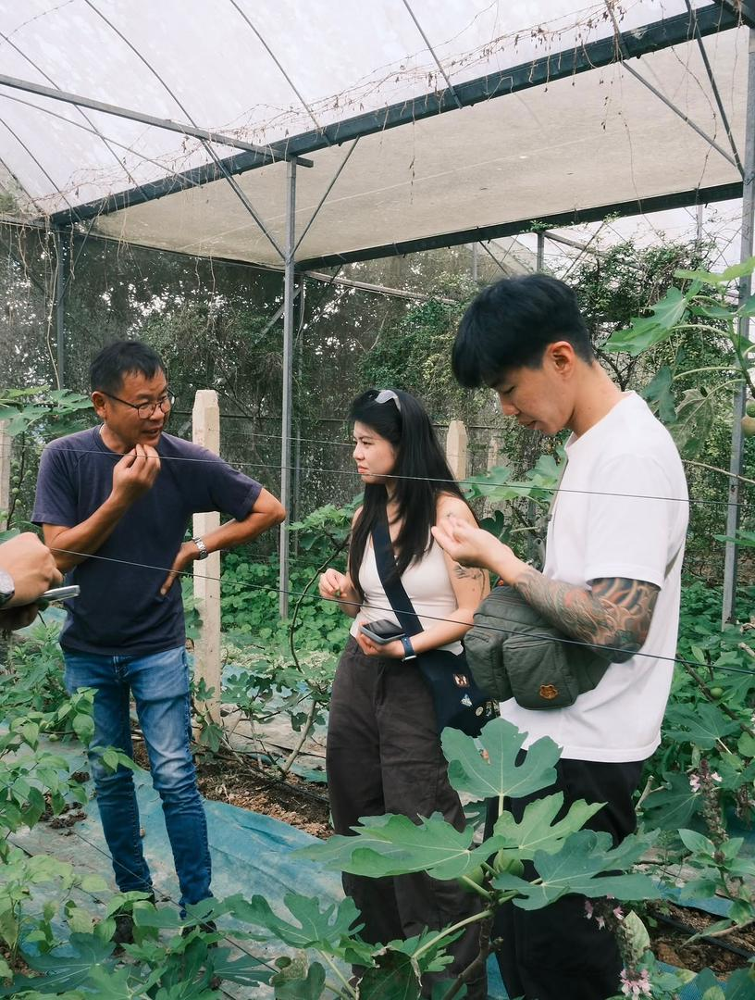
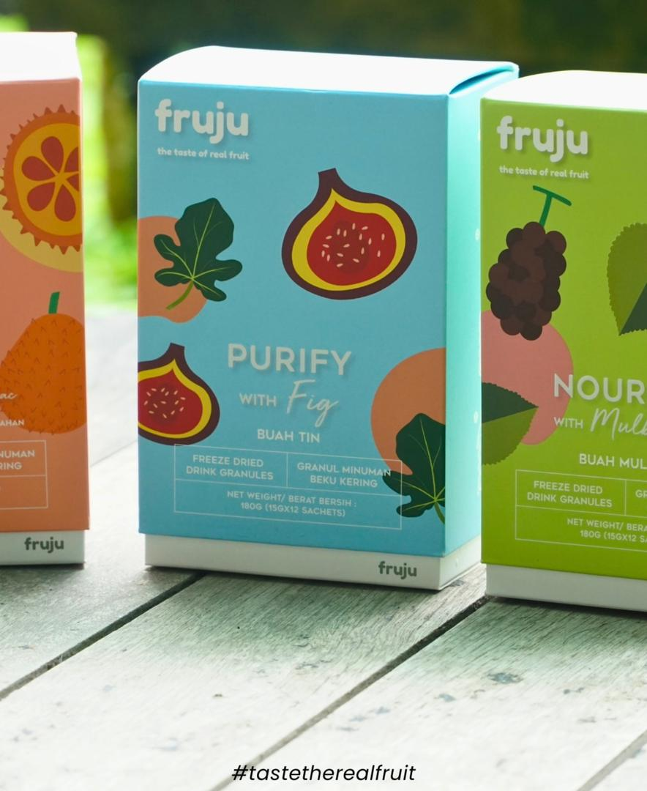

Robin Lim has extensive knowledge in modern agriculture and farm management. He continuously studies innovative farming systems to improve crop quality and productivity.
His expertise includes greenhouse systems, smart irrigation technology, sustainable agriculture, and tropical fruit cultivation techniques.

